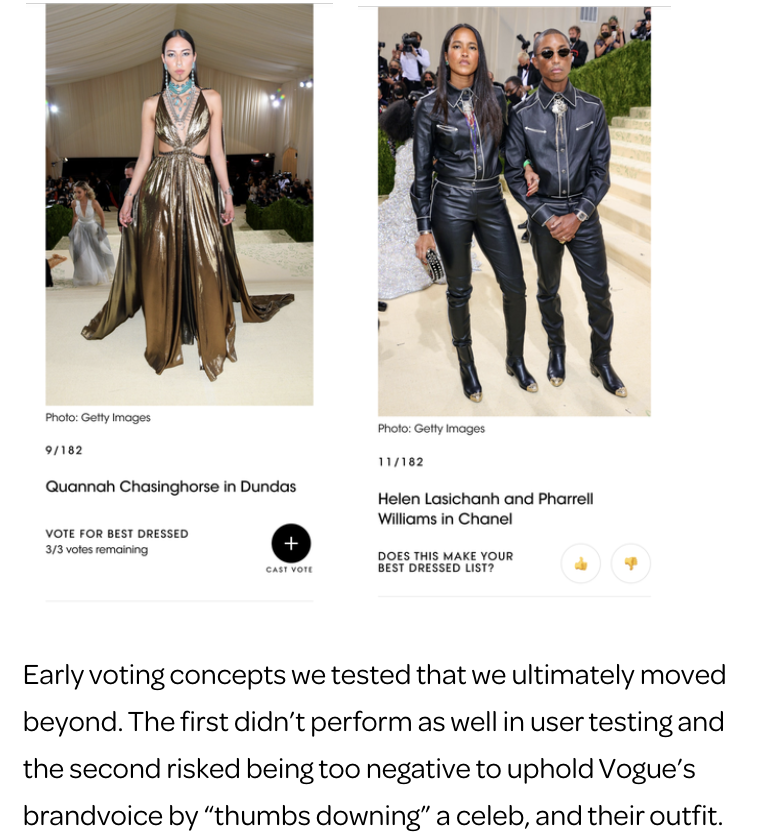
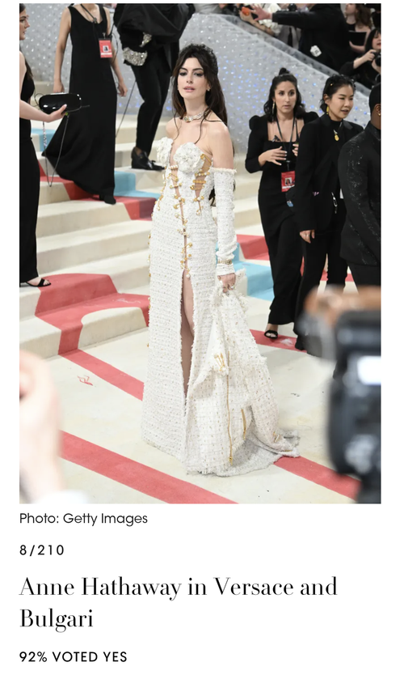
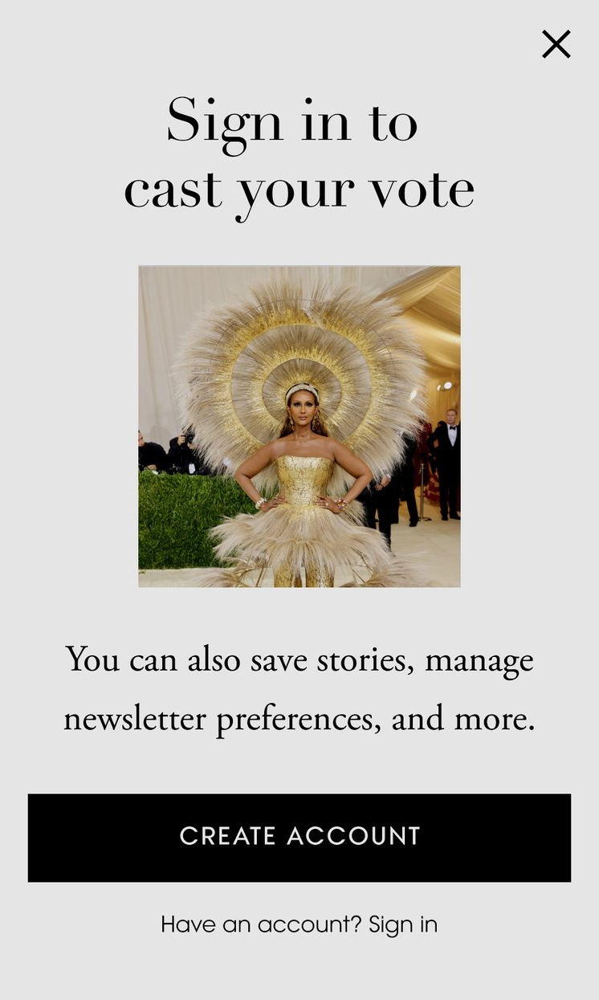

Case Study — Vogue
The Met Gala Voting Experience
We needed to design a new feature for the 2022 Met Gala that would compel readers to register for free accounts and engage on our pages for longer. Vogue's Met Gala red carpet gallery sees almost 2 million visitors in the first 3 days it's live — if just 1% of visitors registered, our known user base would skyrocket.
Challenge
One of Condé Nast's primary business initiatives is turning visitors into known users. In June 2021, we began gating content — but gates proved negative as an experience, and we didn't want to risk frustrating our audience during our highest-traffic event: The Met Gala.
The design challenge: Rather than taking something away from readers, what value could we add that was worth creating an account?
Design Rationale
- The game toggles were clearly visible on the gallery page. Once a user chose to interact, they would be prompted to register to continue — blocked from voting until they entered their email address.
- For users who decided not to continue, their reading experience was not blocked — avoiding the risk of frustration and page abandonment.
- We needed language that created a compelling game but didn't feel off-brand for Vogue. After workshopping with Editorial, we proposed "Is this look on theme?" — positive, yet still compelling an opinion, focused on fashion rather than personal judgement.

An overlay appeared after a user cast their vote, prompting registration to continue engaging with the feature.
Outcome

